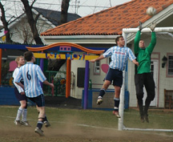

|
YC&AC, Sun 12th February. High noon. A group of locals beat the ground repeatedly with their sticks, the oncoming attack from another tribe being greeted with a cloud of dust as the stick beating gathers momentum. A scene from Zulu? No, it's the YCAC hockey team knocking seven bells out of the pitch before the YCAC 1st XI take on BFC.
Once the dust had settled, the YCAC boys took to the divot strewn field confident of maintaining their chase of the runaway TML leaders Hibs, who have begun to drop points as often as Anthony drops his morning-after bombs in the YCAC dressing room. OK, that might be a touch optimistic, the Hibs having simply drawn against the Geckoes the previous week, but another YCAC win yesterday would have had the Hibs looking over their shoulders at least.

But it wasn't to be. The YCAC started poorly, their slick passing of the previous two weeks deserting them on the dry bumpy surface, and they lost possession far too easily in the opening period to some eager BFC tackling. After about 20 minutes, BFC took advantage to open the scoring. A quickly taken free-kick caught the YCAC defence napping and Jon Day latched onto the through ball before calmly stroking it past YCAC keeper Gary and into the top corner. 1-0 BFC and deservedly so.
Unsurprisingly, this had the desired effect on the YCAC, and they started to create some chances towards the end of the half. Anthony went close with a well executed turn and shot from the edge of the area and James placed a header narrowly wide. The returning Graeme also had a goal controversially ruled out for a foul on the BFC keeper, an up and under from the former YCAC captain resulting in the keeper tumbling under a challenge (or possibly just a fierce stare) from James and dropping the ball into his own net.
A few sharp words and a sprinkling of tactical genius from sidelined skipper Steve at half-time led to a much improved YCAC display in the second half (I can't remember what gubbins he came out with this time but I am keen to start next week). Graeme equalised within a couple of minutes of the restart with a header from Joe's corner, and the YCAC began to build up the pressure on the BFC goal. Steve then produced an inspired substitution (centre-mid if you don't mind), bringing on Suyama on the right wing. With his first touch, Suyama ran at the heart of the BFC defence and was brought down for a stone-wall penalty with about 15 minutes remaining. Up stepped Joe, only to see his penalty saved by the BFC keeper. Drama followed as Ref Ricky ruled that the keeper had come too far off his line and the penalty was retaken by Joe, this time giving the keeper no chance with an unstoppable swipe into the side-netting.
2-1 to YCAC, and three points seemingly in the bag as BFC seemed incapable of preventing them from creating further chances to put the result beyond doubt. But, those chances were squandered and to their credit, BFC refused to give up. They then had the last word when, on 80 minutes, one of their number went down during a bit of a scramble in the box and Ref Ricky pointed to the spot. Phil Lowes crashed the resulting penalty in off the bar, and the game finished at 2-2. A hard earned point for both teams, but it was the YCAC who left the dustbowl knowing that two vital points had been thrown away.
Report - Gavin Margetson
|